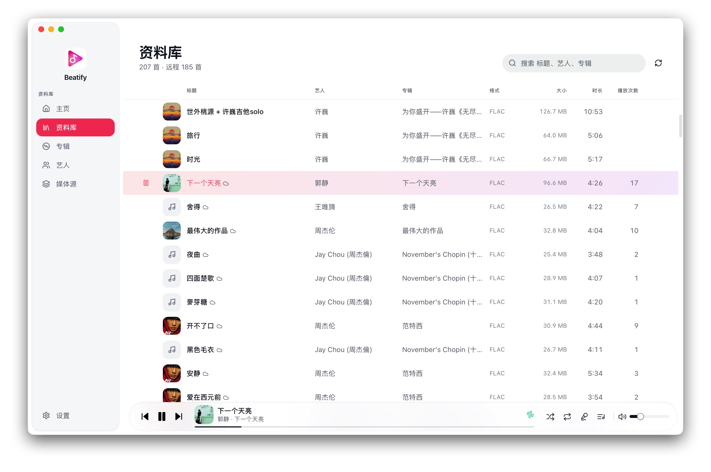
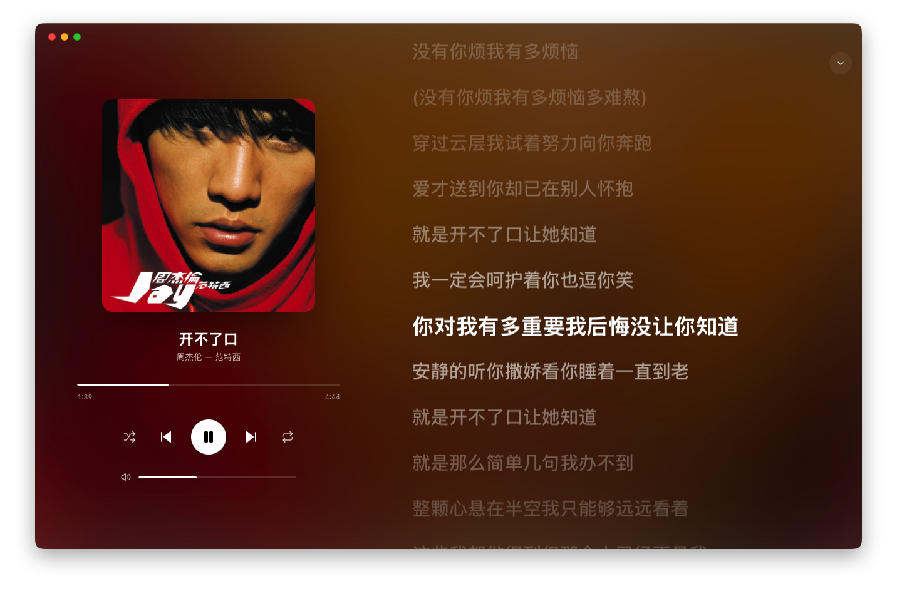

数据尽量留在本地。
能放在用户设备上的数据，就不要求上传到账号或云端。

Desktop Software
一款面向本地资料库的桌面音乐播放器。资料管理、播放队列和同步歌词都保持清楚、安静、直接。
添加本地文件夹或 WebDAV 服务器，Beatify 会在文件变化后更新资料库。封面、播放记录与设置都保存在本机。


Approach
产品应该解决问题，同时尊重使用者的数据、时间和注意力。
能放在用户设备上的数据，就不要求上传到账号或云端。
适合开源的产品会开放代码，让功能、限制和隐私边界都可验证。
减少不必要的依赖和干扰，让软件在发布之后仍然值得维护。
Beatify